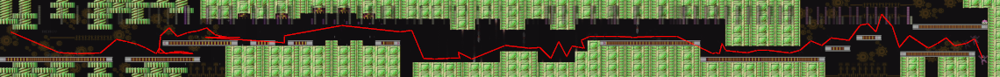
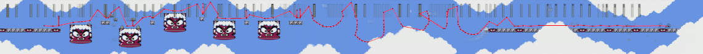
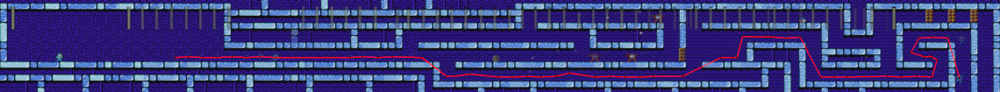
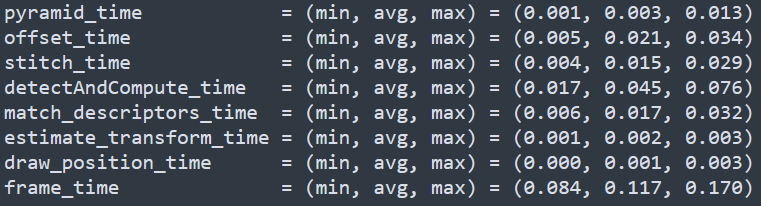
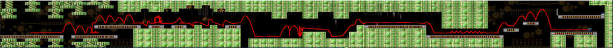
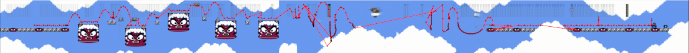
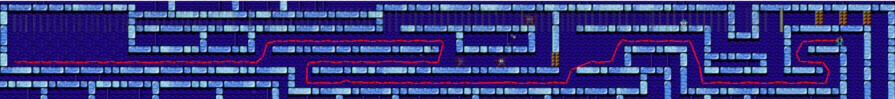
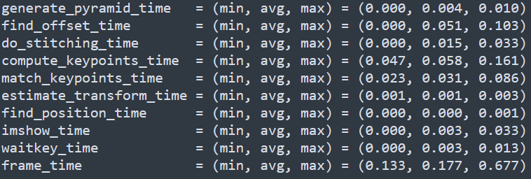

Project-01
Abstract
There is a niche hobby among video game enthusiasts called speed-running. The goal is to play through a beloved game as quickly as possible. This means optimizing ones path and route through each stage of the game, until the end is reached. A popular genre of video games for this pursuit is 2D platformers, where the screen scrolls up/down and left/right as the player advances their character through the stage. There are benefits to be able to see the whole stage at once and see ones path through it on a given play through it. However, a player is only given a limited view of the screen, and cannot view the stage nor their path through it all at once. To solve this problem, we propose a new tool that will give a view of both the stage and the players' route through the stage together. To do this, we will use existing image-stitching and object-tracking techniques, and optimized them to be executed in real-time.
Introduction
The hobby of speed-running is a niche hobby of video game enthusiasts that has a rich background of technical innovation and is one based in optimization and personal improvement. One can compete against others, or simply compete against their own personal-bests. Many people in the speed-running community focus more heavily on the optimization of routes through games. For those individuals, the tools used to determine what is optimal are lacking. In most cases, it is experimentation with a stop-watch and video. However, this method has its limitations, namely in that it has poor visualization and summarization; a video is slow and doesn't show the whole picture at once.
We propose a new tool that will help those optimize paths through stages of games, and have better visualization and summarization abilities. This proposed tool will use image-stitching and object-tracking methods from computer vision to create panoramic stage map with an associated path through said stage. It can be run on sequence of screenshots, but also be able to run in real-time. Not only can it be used for optimization purposes, but can enhance the spectators experience through visualization as well.
A popular genre of games to speed-run are the 2D platformer style of game in which the game scrolls along a fixed perspective left/right and up/down. With regards to panoramic image-stitching, this has the benefits that the relevant transformation from one frame to the next is solely translation; there are scaling, rotations, or perspective transformations to consider. Similarly the transformation have a discrete nature in that whole pixels will always overlap with whole pixels. However, a common computer vision technique for image-stitching is feature-based key-points, we run into issues with key-point matching. Because we only need one good pair of key-points to estimate the transformation, there are many wrong answer. This is because the stages of games are set up using tiles. Any key-points detected within a tile are certainly going to be repeated many times and thus not unique enough guarantee a quality result. Similarly, certain animation patterns that vary in brightness from frame to frame like blinking can throw key-point matching off. For these reasons we pursue a pixel-based shift-and-compare technique for image-stitching.
Fortunately, the drawbacks of tiles for image-stitching yield some benefits for using feature-based key-points for object tracking. Because the object we are tracking is a singular sprite on screen, it is unlikely to be duplicated multiple times in the same frame. However, from frame to frame, sprites do change as they progress through an animation cycle, which presents a difficulties in object-tracking.
Methodology
To develop this tool, we break the problem into two components, the image-stitching and the object-tracking. The image-stitching provides us the canvas upon which we plot the player-character's path on. The object-tracking gives us the temporal and spatial information necessary to calculate efficiency metrics, which we then would use to optimize the route through the stage.
Image-Stitching
To stitch together the images we take a base frame and expand upon it by adding another frame, and stitching to the base. This is done by first calculating the overlap that minimizes the difference between the two frames and from that calculating an offset from the base to the new image. Once we have the offset, we can overlay and composite the two images together which then creates a new base image for the next iteration. We use a simple image composition of averaging the color channels in the overlap of the canvas and frame, and leave the rest unaltered.
Offset-Calculation
To calculate the offset for the new frame from the base image, we need not only accuracy, but also expediency. Towards these ends we use known image-pyramiding techniques to speed the process up. First, we create the pyramid for both the current base canvas, and again on the incoming frame. Second, we shift-and-compare the new frame over the base canvas and calculate the loss for each potential offset. Next, we take the offset with minimal loss, and proceed up the pyramid one level. We refine the offset for that level by shift-and-compare over a much smaller pool of candidate offset, and choose the offset with minimal loss. This continues until we are at the desired level of the pyramid we intend to use for our output.
Object-tracking
To track the object that is the player character of the game, we first locate the character in a given frame. To do this we use feature-based key-points of both reference images of the player character, and match them with each frame to determine the position of the player-character. In our preprocessing we generate the key-points for the player character and are able to use them throughout execution. We use two reference images, one of the idle-pose of the character facing left and another facing right. When we match the key-points, we use RANSAC, and generate an affine transformation that fits as many key-points as possible, given us a number of inliers. We determine if the character is facing left or right based upon which reference image generate the larger set of inliers. Once we've decided the facing of the character, we can determine the position by taking the average of the inliers for the fitting affine transformation.
Exceptions
Lastly, it is necessary to adjust the position for the current frame by the offset generated in the previous step of image-stitching. This is a simple translation in the horizontal direction that yields us the position of the character in the merged canvas for each iteration. However, there are times in which the character is not visible, and thus we are unable to calculate the position direction. We determine if the character is visible by the shape of the transformed reference image in the destination image. If when the bounding box of the reference image is run through the transformation, the resulting area is vastly different than the reference, we judge the measurement to be inaccurate, and repeat the previous known position for another iteration.
Experimental-Setup
Hardware
To test the tool, we used two different hardware configurations. First, we used an original 1985 Nintendo Entertainment System (NES) console, connected to a PC using an SD capture card for frame capture. Second the NES Classic console, which is a hardware emulated platform released in 2016. This platform has some conveniences such as hardware upscaling to HD, for which we use an HD capture card to connect to the PC for frame capture. In both configurations, we use versions of the 1988 game Megaman 2 available for each console.
Software
The tool itself is implemented in Python, using OpenCV and Numpy, in addition to MatPlotLib used for graph visualization.
Dataset
Using both hardware configurations, we generate datasets consisting of a full play-through of the game, sampled at 4 fps. Select subsets of samples were chosen for testing particular sections of certain stages.
Experiments
To show the effectiveness of these methods, we choose two environments: a static-sequence based execution and then a real-time based execution. For each environment we consider three stages in the game Megaman 2: Flash-Man, Metal-Man, and Air-Man. Each stage presents issues that could cause errors in the tool.
Flash-Man, surprisingly has tiles that flash in an alternating fashion, and is predominantly blue like player's character, Megaman.
Metal-Man has an animated background, and shifting tiles that can cause issues with alignment, but provide a good baseline to measure the others against.
Air-Man is a relatively sparse stage, and can give little for an image-stitching algorithm to work with. Additionally, the stage sometimes obscuring the player-character behind features in the foreground, making object-tracking more difficult.
Static Sequence Execution
We first proved the solution can be done on datasets consisting of sequences of static images that were collected in multiple plays through the game. We chose a subsets of frames associated with the select stages.
Real-Time Execution
Once we proved the process was working for a given static sequence of images, we port our implementation to the real-time environment. Similar to before we use the same stages to test our tool, and measure the performance of the tool.
Results
Static-Sequence Execution
Below, we have the results for the three test stages, and we can see the proof on concept works. We do note some errors in object-tracking in Metal-Man and Air-Man, but overall they are minimal. There are two image-stitching errors in Flash-Man, which are due to the flashing tiles, but otherwise the object tracking is consistent and accurate given the limited 4fps of the dataset. Our performance shows that detecting and computing the key-points, takes up the most time, followed by finding the offset using shift-and-compare. Overall, we get approximately 8.5 frames per second, faster than what the dataset was capture at, showing use we can get a good stage map at less than our current performance.
Metal-Man Stage
Air-Man Stage
Flash-Man Stage
Performance
Real-Time Execution
Below, our results are not inconsistent with the static-sequence environment, and are overall good results. However, we do issues on Air-Man stage with the image-stitching, and therefore similarly with the object-tracking; it loses track in the middles when the feature on the screen are most sparse, and determines a zero offset is minimal, when it is not the case. Surprisingly, Flash-Man's stage doesn't have the same image-stitching errors that we see in the static-sequence, but is correct, and the object tracking is correct, as it is with Metal-Man's stage. We get an overall frame-rate of 5.65 frames per second, which is higher than what the static-sequence datasets were collected at, and we can see the results are overall better.
Metal-Man Stage
Air-Man Stage
Flash-Man Stage
Performance
Conclusion
In conclusion, we have a tool that can map a section of a stage, and the path taken through it. Further computations will be done to calculate the path-length and duration to give additional insights into the optimization potential of a given stage. Similarly, more derived information could be overlaid in the same fashion as the character's path, such as timing milestones. Unfortunately, the limitations of the tool are that it works in the cases of horizontal-only scrolling, and does work for vertical-only scrolling, and has issues when doing both. The issue is that it's occasionally difficult to determine which direction the screen. One example of such is when it is determined that a zero horizontal-shift yields a minimal loss instead of a small vertical-shift.
Future Work
In the future, I'd like to extend this method to be used in other games of interest, and improve upon the accuracy and performance. I'd like to try feature-based key-point image-stitching again, and see larger features that can overcome the tiling problem. Similarly, efficiency could potentially be gained in the pixel-based image-stitching technique by take a large path and comparing that between images to obtain an offset. In addition, It would be great to be able to take a full video and subsample it as a sequence of frame to run through the tool to